This guide covers all of Midnight Alchemy. You'll find every weekly and one-time Knowledge source, profession equipment, renown-gated recipes, and full recipe lists for potions, flasks, phials, cauldrons, transmutations, alchemist stones, and house decor.
Midnight Alchemy changed a lot from The War Within. The specialization trees were restructured, quality went from three tiers to two, transmutations replaced the old Thaumaturgy minigame, and a new deterministic discovery system (Camberon's Cauldron) lets you unlock recipes without RNG.
If you need help leveling Alchemy from 1 to 100, check out my leveling guide:
Midnight Alchemy Leveling Guide
Midnight Alchemy Changes
Midnight Alchemy changed a lot compared to The War Within. The spec trees were simplified, quality went from three tiers to two, and there's a new recipe discovery system that doesn't rely on RNG. Here are the biggest changes:
- Quality Changes - Consumables and reagents now only have two quality levels (Silver and Gold) instead of three. Flasks and potions craft at minimum Silver quality.
- Artisan Alchemist's Moxie - The BoP currency
 Artisan's Acuity that you got from earning profession Knowledge in The War Within has been changed to a profession-specific currency,
Artisan's Acuity that you got from earning profession Knowledge in The War Within has been changed to a profession-specific currency,  Artisan Alchemist's Moxie. You can now only use it for Alchemy-specific recipes.
Artisan Alchemist's Moxie. You can now only use it for Alchemy-specific recipes. - Epic Profession Tools - New Epic-quality profession tools are available, providing more secondary stats than Rare tools.
- Camberon's Cauldron - A new discovery system lets you learn recipes without RNG.
- Simplified Spec Trees - TWW had 5 separate sub-trees for each herb inside Alchemical Mastery. Those are gone. Alchemical Mastery is now a simple efficiency tree with Resourcefulness branches for flasks, potions, and reagents. The entire transmutagen minigame (Gleaming, Ominous, Volatile, Mercurial) is gone. Transmutes are straightforward material conversions and mote cycling.
Weekly Alchemy Knowledge in Midnight
In Midnight, there are four weekly sources of profession Knowledge, giving you ~23 Knowledge Points per week. But this is only an estimate, because Patron Orders require crafting specific items at high quality, so your actual weekly total will be lower if you don't have the recipe or can't hit the quality target.
| Source | Details |
|---|---|
| Patron Crafting Orders (~16 KP) | Patron orders are the main source of Knowledge Points. You will receive multiple orders throughout the week. Some of them will reward you with |
| Weekly Quest (2 KP) | Your profession trainer will offer a weekly quest that asks you to complete 3 Crafting Orders. This rewards a |
| Weekly Drops (4 KP) | Each week, you can loot 1 of each of the following items from treasures scattered around the new zones: Lightbloomed Spore Sample and 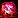 Aged Cruor. |
| Inscription Treatise (1 KP) | To get a |
| Darkmoon Faire (3 KP / month) | Once a month, the Darkmoon Faire comes to town and you can complete a quick profession quest for +3 Knowledge Points and +2 Profession Skill. It's not a weekly source, but don't skip it. The Faire starts on the Sunday before the first Monday of each month. |
| Catch-up System | If you fall behind or start late, you will receive |
One-Time Alchemy Knowledge in Midnight
These are one-time sources of Knowledge Points that you can collect once per character. Treasures are scattered across all Midnight zones and give 3 KP each.
Renown Knowledge Book
Beyond the Event Horizon: Alchemy is a one-time Knowledge Point book sold by the Voidstorm Renown Quartermaster. It gives 10 Midnight Alchemy Knowledge Points.
Midnight Alchemy Treasures
There are 8 Alchemy treasures scattered across Silvermoon City, Zul'Aman, Harandar, and Voidstorm. Each treasure gives 3 Knowledge Points for a total of 24 KP. These are one-time pickups per character, so grab them as soon as you can.
| Treasure | Zone | Map |
|---|---|---|
| Pristine Potion | Silvermoon City | |
| Freshly Plucked Peacebloom | Silvermoon City | |
| Vial of Zul'Aman Oddities | Zul'Aman | |
| Measured Ladle | Atal'Aman | |
| Vial of Rootlands Oddities | Harandar | |
| Vial of Voidstorm Oddities | Slayer's Rise | |
| Failed Experiment | Location not found yet | |
| Vial of Eversong Oddities | Location not found yet |
TomTom Waypoints & Treasure Check Macro
TomTom Waypoints
/ttpaste in-game/way #2393 47.8, 51.8 Pristine Potion /way #2393 49.1, 75.8 Freshly Plucked Peacebloom /way #2437 40.4, 51.1 Vial of Zul'Aman Oddities /way #2536 49.1, 23.6 Measured Ladle /way #2413 34.8, 24.7 Vial of Rootlands Oddities /way #2444 41.9, 40.6 Vial of Voidstorm Oddities
Treasure Check Macro
true = collectedCamberon's Cauldron
Camberon's Cauldron is the new recipe discovery system, but honestly I wouldn't even call it "discovery" since there's no RNG involved. It's more like a recipe library.
Each recipe has a small requirement like "Craft 10 potions" or "Craft 5 flasks". Once you meet it, you can unlock the recipe for some materials, and some recipes also cost  Artisan Alchemist's Moxie.
Artisan Alchemist's Moxie.
Where is Camberon's Cauldron?
You can find Camberon's Cauldron in Silvermoon City, right next to the Alchemy trainer.
All Camberon's Cauldron Recipes
Here's every recipe you can research at the Cauldron. The Unlock Requirement column shows what you need to do before each recipe becomes available for research.
| Recipe | Unlock | Moxie Cost |
|---|---|---|
| Equipment | ||
| Level Alchemy to 10 | None | |
| Flasks & Phials | ||
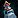 Flask of the Blood Knights |
Drink a 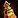 Flask of Thalassian Resistance. |
50x |
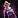 Flask of the Magisters |
Craft Sin'dorei flasks 10 times | 50x |
| Flask of the Shattered Sun | Craft Sin'dorei flasks 10 times | 50x |
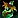 Haranir Phial of Ingenuity |
Craft Haranir phials 15 times | 25x |
| Potions | ||
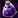 Draught of Rampant Abandon |
Craft Void Potions 10 times | 50x |
| Light's Potential | Create 5 Midnight Healing Potions | 50x |
| Lightfused Mana Potion | Recycle Midnight Potions 5 times | None |
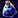 Potion of Devoured Dreams |
Craft Void Potions 15 times | 25x |
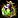 Potion of Zealotry |
Brew 10 Light Potions | 50x |
| Transmutations | ||
| Bouquet of Herbs | Perform 5 Midnight Transmutations | 25x |
| Perform 5 Midnight Transmutations | 25x |
|
| Perform 5 Midnight Transmutations | 25x |
|
| Perform 10 Midnight Transmutations | 25x |
|
| School of Gems | Perform 10 Midnight Transmutations | 25x |
Alchemy Specializations
There are four specialization trees available. You will unlock access to them at Alchemy skill levels 25, 50, 60, and 75.
- Potion Prowess - All the potion recipes, split into Light potions and Void potions.
- Fluent in Flasks - Flasks and phials, plus a group cauldron recipe.
- Alchemical Mastery - Resourcefulness for cutting material costs across potions, flasks, and reagents.
- Transmutation Authority - Transmutation recipes and Multicraft for those crafts.
I have a separate guide that walks through the best builds for each playstyle with step-by-step Knowledge Point allocation.
Midnight Alchemy Specialization Guide & Best Builds
Profession Equipment
Epic profession tools are new in Midnight. In The War Within, professions only had Green and Rare tools. Epic tools give the same Skill as Rare, but have higher secondary stats like Resourcefulness, Multicraft, and Ingenuity.
Profession Gear for Alchemists
Alchemists do not craft their own profession tools. Your Mixing Rod comes from Inscription, your Hat from Leatherworking, and your Apron from Tailoring.
| Slot | Crafted By | Green Quality | Blue Quality | Epic Quality |
|---|---|---|---|---|
| Tool | Inscription | |||
| Accessory | Leatherworking | |||
| Accessory | Tailoring |
Renown Recipes
A few Alchemy recipes are locked behind zone-faction Renown. You need Renown Rank 5 to buy them.
| Recipe | Description | Faction | Vendor |
|---|---|---|---|
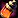 Amani Extract |
Heal over time | Amani Tribe (Rank 5) | Magovu |
| +Perception phial | Hara'ti (Rank 5) | Naynar | |
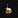 Rootbound Vat |
House Decor | Hara'ti (Rank 5) | Naynar |
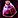 Potion of Recklessness |
Damage potion | The Singularity (Rank 5) | Void Researcher Anomander |
Potions
Potions are split into Light and Void. Both have combat potions, but Void potions tend to have drawbacks or risk-reward tradeoffs. Most are unlocked through Camberon's Cauldron.
| Recipe | Effect | Source |
|---|---|---|
| Light Potions | ||
| Enlightenment Tonic | Slow fall | Trainer (5) |
| Light's Potential | +Primary Stat | Discovery: Camberon's Cauldron |
| Absorb shield | Spec: Potion Prowess | |
| Lightfused Mana Potion | Restores mana | Discovery: Camberon's Cauldron |
| Potion of Zealotry | Proc: Holy damage | Discovery: Camberon's Cauldron |
| Restores health + mana | Trainer (15) | |
| Silvermoon Health Potion | Restores health | Trainer (1) |
| Void Potions | ||
| Amani Extract | Heal over time | Vendor: Magovu (Zul'Aman) |
| Draught of Rampant Abandon | +Primary Stat, spawns void zones | Discovery: Camberon's Cauldron |
| Entropic Extract | Cosmetic appearance change | Trainer (5) |
| Potion of Devoured Dreams | Channel: Restores mana, defenseless | Discovery: Camberon's Cauldron |
| Potion of Recklessness | +Highest secondary, −Lowest secondary | Vendor: Void Researcher Anomander (Voidstorm) |
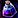 Void-Shrouded Tincture |
Invisibility | Spec: Potion Prowess |
Flasks & Phials
There's one flask per secondary stat, and you unlock most of them through Camberon's Cauldron. Haranir Phials are for profession stats. The PvP flask is bought with Honor from Mirvedon in Silvermoon City.
| Recipe | Effect | Source |
|---|---|---|
| Flasks | ||
| Flask of Thalassian Resistance | +Versatility | Spec: Fluent in Flasks |
| Flask of the Blood Knights | +Haste | Discovery: Camberon's Cauldron |
| Flask of the Magisters | +Mastery | Discovery: Camberon's Cauldron |
| Flask of the Shattered Sun | +Critical Strike | Discovery: Camberon's Cauldron |
| +15% honor gains | Vendor: Mirvedon (Silvermoon City) | |
| Haranir Phials | ||
| +Finesse, +Deftness | Spec: Fluent in Flasks | |
| Haranir Phial of Ingenuity | +Ingenuity, +Crafting Speed | Discovery: Camberon's Cauldron |
| +Perception, +Deftness | Vendor: Naynar (Harandar) | |
Cauldrons
Each cauldron is locked behind 30 points in its respective spec tree, so you need to fully commit to either Fluent in Flasks or Potion Prowess to get one.
| Recipe | Source |
|---|---|
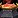 Cauldron of Sin'dorei Flasks |
Spec: Fluent in Flasks (30) |
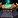 Voidlight Potion Cauldron |
Spec: Potion Prowess (30) |
Transmutations
The Mote transmutes convert 10 of one type into 8 of another, but they can Multicraft so you sometimes get more. Most transmutations are discovered through Camberon's Cauldron.
Wondrous Synergist is the new daily cooldown transmute. Right now it's only used in housing decor recipes and both cauldrons, so it's hard to say how valuable it will be. I wouldn't invest heavily into Transmutation Authority just for this until the market settles.
| Recipe | Description | Source |
|---|---|---|
| Reagent Transmutes (18h shared CD) | ||
| Bouquet of Herbs | Enchanting Mats → Herbs | Discovery: Camberon's Cauldron |
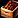 Box of Rocks |
Leather → Ore | Spec: Transmutation Authority |
| School of Gems | Fish → Gems | Discovery: Camberon's Cauldron |
| Mote Transmutes (18h shared CD) | ||
| Primal Energy → Light | Discovery: Camberon's Cauldron | |
| Pure Void → Primal Energy | Discovery: Camberon's Cauldron | |
| Wild Magic → Pure Void | Discovery: Camberon's Cauldron | |
| Light → Wild Magic | Trainer (5) | |
| Other | ||
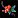 Composite Flora |
Reagent, No CD | Trainer (10) |
| The daily CD (18h) | Spec: Transmutation Authority | |
Alchemist Stones
The Rare version is a basic stat stick from Camberon's Cauldron. The Epic version (Magister's Alchemist Stone) enhances your potion effects but it counts as an embellishment, so keep that in mind when planning your gear. It requires 30 points in Transmutation Authority to unlock.
| Recipe | Source |
|---|---|
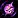 Magister's Alchemist Stone |
Spec: Transmutation Authority (30) |
| Discovery: Camberon's Cauldron |
House Decor
Alchemy can craft decorative items for player housing. These come from various sources including vendors, world drops, and Delve chests.
| Recipe | Source |
|---|---|
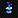 Entropic Illuminant |
Drop: Voidstorm Treasures |
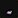 Haranir Preserving Agents |
Vendor: Lyrendal (Silvermoon City) |
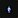 Riftstone |
Drop: Heavy Trunk (Delves) |
| Rootbound Vat | Vendor: Naynar (Harandar) |
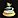 Silvermoon Spire Fountain |
Drop: Heavy Trunk (Delves) |
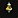 Sunsmoke Censer |
Vendor: Lyrendal (Silvermoon City) |